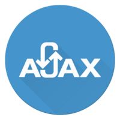
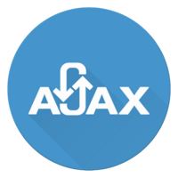

Tecnologias Destacadas


 



Técnologias:
E-Commerce Play
Nesse sistema, o backend foi construído como uma API utilizando .NET Core. Para gerenciar a autenticação e autorização dos usuários, foi implementado o ASP.NET Identity. Isso proporcionou uma forma segura e eficiente de lidar com o registro, login e controle de acesso.
Já no frontend, o Angular foi a escolha para criar uma interface de usuário dinâmica e interativa. A utilização do Bootstrap ajudou a garantir um design responsivo e atraente, facilitando a experiência do usuário em diferentes dispositivos. Além disso, o Redis foi integrado à aplicação para armazenar o carrinho de compras dos usuários de forma eficiente.
E para processar os pagamentos online, foi implementado o Stripe, garantindo transações seguras e compatíveis com os padrões de segurança europeus. Por fim, a aplicação foi implantada em um servidor Linux, garantindo estabilidade e escalabilidade na produção. Essa combinação de tecnologias resultou em um e-commerce completo e funcional, pronto para atender às necessidades dos usuários.
Técnologias:
Odonto Control
O projeto "Odonto Control" ocupa um lugar especial no meu coração. A ideia para esse projeto surgiu da minha dentista, e logo após concluir meu curso de ASP.NET, decidi aplicar todo o conhecimento adquirido na prática, o que resultou em um projeto final incrível com diversas funcionalidades que levei meses para implementar.
Durante o desenvolvimento desse projeto, adquiri valiosas experiências sobre a estruturação de sistemas, aprendendo com meus acertos e erros. Essa jornada me proporcionou um profundo entendimento do ambiente .NET e me deixou extremamente confiante na minha habilidade de desenvolvimento.
Para compartilhar esse trabalho, disponibilizei o projeto no GitHub. No entanto, tenho planos de comercializá-lo no futuro, por isso, algumas informações sensíveis no projeto do GitHub foram alteradas para proteger a propriedade intelectual e a privacidade dos dados.

Técnologias:
Omnifood
Este projeto foi realizado durante o curso "Build Responsive Real-World Websites with HTML and CSS", e obtive uma série de aprendizados valiosos por meio dele, tais como design de experiência do usuário (UX) e design de interface (UI), juntamente com outros conceitos fundamentais, como responsividade e a forma como um site é desenvolvido no contexto real.
Técnologias:
Realth Service
Este projeto foi desenvolvido com o objetivo de apresentar um novo produto. Após analisar minhas habilidades de design em outros projetos anteriores, meu chefe sugeriu que criássemos um site semelhante para nossa empresa. O site segue os mesmos princípios de responsividade e web design que aprendi em um curso anteriormente mencionado.

Técnologias:
Projeto Pokemon
Este projeto marcou o início da minha carreira como desenvolvedor. Embora eu não acredite mais nas escolhas que fiz nele, tenho muito orgulho dessa experiência, pois foi a primeira vez que coloquei em prática os conhecimentos adquiridos durante meu curso na ETEC. No entanto, é importante ressaltar que muitas funcionalidades não estão operacionais, pois decidi interromper o desenvolvimento do projeto devido a outros compromissos e projetos em andamento.

Técnologias:
Marques' Gym
Após concluir com êxito o meu curso de WebDesign "Build Responsive Real-World Websites with HTML and CSS", decidi colocar em prática todas as habilidades adquiridas. Animado para testar as minhas novas competências, decidi aplicar todo o conhecimento adquirido, incluindo os princípios de responsividade, design e outros aspectos relevantes, em um projeto simples sobre um tema que desperta grande interesse em mim: academia.


Técnologias:
Projetos em JavaScript
Aqui estão alguns projetos que realizei durante o meu curso de JavaScript, "The Complete JavaScript Course 2023: From Zero to Expert!" Esses projetos me proporcionaram uma compreensão sólida de conceitos fundamentais, como manipulação do DOM e criação de efeitos visuais frequentemente utilizados em diversos websites.
Técnologias:
Projetos em NextJs
Aqui estão alguns dos projetos que desenvolvi durante o curso "Next.js 14 & React - The Complete Guide", a realização dos mesmo me foi solicitado quando uma demanda crucial de Next.js surgiu na empresa. . Esses projetos me forneceram uma compreensão sólida de conceitos fundamentais, incluindo as duas estruturas do Next.js (pages & file routing), bem como a prática de conceitos avançados como a geração de páginas com server-side props e static props. Além disso, explorei o uso de diversas bibliotecas, como o next-auth, ampliando ainda mais meu conhecimento e habilidades em Next.js e React.
Técnologias:
Projetos em NextJs
Aqui estão alguns dos projetos que desenvolvi durante o curso "Bootstrap 5 From Scratch | Build 5 Modern Websites". Antes de iniciar os projetos, foram explicados todos os conceitos fundamentais do Bootstrap, incluindo utilitários, componentes e, principalmente, a personalização das variáveis do Bootstrap para obter um visual menos característico da biblioteca padrão.
Apesar da complexidade dos projetos, eles foram desenvolvidos de forma ágil devido à facilidade de uso do Bootstrap. No total, foram três projetos concluídos rapidamente, demonstrando a eficiência da ferramenta para o desenvolvimento web.


Técnologias:
+ Projetos em JavaScript
Aqui estão alguns mais projetos que realizei durante o meu curso de JavaScript, "The Complete JavaScript Course 2023".
O projeto denominado "Forkify", foi desafiador, porém incrivelmente gratificante, pois me deu a oportunidade de aplicar e consolidar todos os conhecimentos que adquiri ao longo do curso. Utilizei uma arquitetura MVC e JavaScript puro (Vanilla JS), com a compilação realizada pelo Parcel.
Já o outro projeto chamando Mapty foi bem mais simples, um app de monitoramento de corridas e caminhadas utilizando uma API de geolocalização, no entando adquiri diversos conhecimentos na elaboração do mesmo.

Técnologias:
Projetos em Asp.Net 7
Aqui estão alguns projetos que desenvolvi durante o meu curso de Asp.Net 7, intitulado "Asp.Net Core 7 (.NET 7) | True Ultimate Guide". Esses projetos representam um conjunto abrangente de funcionalidades que adquiri ao longo do curso.
Durante o curso, adquiri diversas habilidades e apliquei em meus projetos. Isso incluiu programação assíncrona, criação de testes unitários usando xUnit e mocks, utilização de injeção de dependência, definição de contratos para serviços e repositórios, adoção do padrão DTO (Data Transfer Object), implementação do Entity Framework para conexão do banco de dados, integração do Identity, aplicação do padrão Repository, implementação de logging, utilização de filtros e muitas outras funcionalidades.

Técnologias:
eShop Microsservices
Um projeto que consiste em microserviços em ASP.NET contêinerizados, cada um interagindo com diferentes contêineres de banco de dados, como MongoDB e PostgreSQL, além de fazer uso de um serviço de armazenamento local (Redis).
Uma abordagem inovadora foi adotada na arquitetura pelo microsserviço de desconto, substituindo o tradicional REST pelo protocolo gRPC. Para mais informaçoes do que foi implementado no projeto verifique a seção de certificões onde é possivel ver todos os conceitos apreendidos no curso.
Técnologias:
Recipe Book
Este projeto foi desenvolvido como parte do curso "Angular - The Complete Guide (2023 Edition)", e representa um marco importante no aprendizado e aplicação das tecnologias avançadas do Angular. O objetivo central deste projeto foi aprofundar o conhecimento em Angular e criar um sistema de gerenciamento de receitas e ingredientes altamente funcional e focado em UX.
Durante a execução deste projeto, foram aplicadas várias tecnologias essenciais do Angular, incluindo componentes, diretivas, módulos, guards, interceptors, injeção de dependência, roteamento, formulários reativos formulários template-driven e um sitema simples de autenticação. Vale resaltar a utilização do firebase como backend algo que com sua facilidade de uso e escalabilidade, permitiu a criação de uma base de dados em tempo real para armazenar e gerenciar as receitas e logins dos usuários.
Técnologias:
DevCode
Este projeto foi realizado como parte do curso "Desenvolvimento de Sistemas" na Etec Eudecio Luiz Vicente. Ele serviu como nosso Trabalho de Conclusão de Curso (TCC), desenvolvido em conjunto com meus colegas de sala. O mesmo consiste em um forúm para programadores com diversas funcionalidades e sinto extrema satisfação com o resultado desse projeto.
Essa experiência foi de extrema importância para mim, pois inicialmente estava bastante ansioso, já que teria que aprender ASP.NET enquanto trabalhava no projeto. Para me preparar, participei do curso "ASP.NET Core 7 (.NET 7) | True Ultimate Guide".
A conclusão desse TCC e a realização de diversos outros projetos me proporcionaram uma confiança significativa ao programar em ASP.NET.